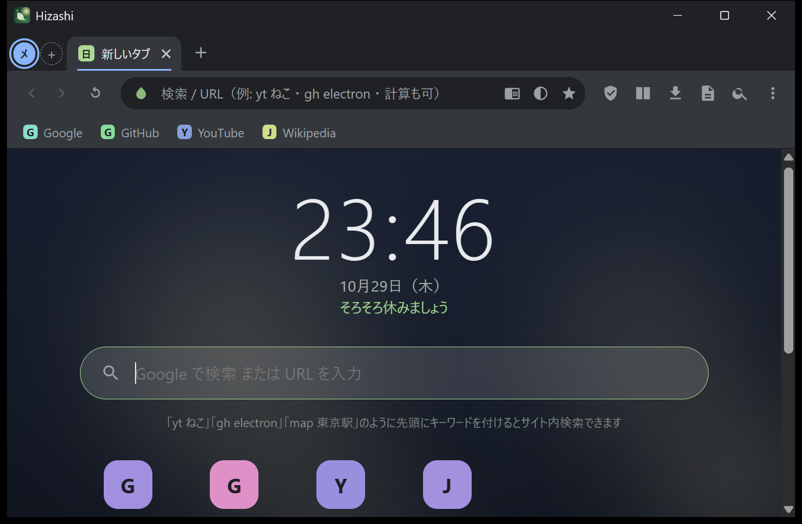

使い方ガイド
はじめて使う人向けに、画面の見方から、便利な使い方、困ったときの対処までをまとめました。
画面の見方

| 場所 | 説明 |
|---|---|
| タブバー | 画面の上（縦タブのときは左）に、開いているタブが並びます。左端の丸いボタンはワークスペースです。 |
| ツールバー | 戻る・進む・再読み込み、アドレスバー、☆（ブックマーク）、ダークモード、シールド（広告ブロックの数とメニュー）、集中モードの残り時間、パネルを開くボタン、メニュー。 |
| ブックマークバー | ツールバーの下。Ctrl+Shift+B で表示を切り替えます。 |
| 右側のパネル | メモ・履歴・ダウンロード・ブックマーク・設定・ヘルプが開きます。同時に開けるのは1つです。 |
| コマンドパレット | Ctrl+K で画面の中央に出ます。 |
基本の操作
- ページを開く：アドレスバー（Ctrl+L で移動）に URL か言葉を入れて Enter。
- 新しいタブ：Ctrl+T。閉じる：Ctrl+W。閉じたタブを戻す：Ctrl+Shift+T。
- 戻る・進む：Alt+← / Alt+→。
- 再読み込み：F5 または Ctrl+R。キャッシュを使わない再読み込みは Ctrl+F5。
- 迷ったら：Ctrl+K を押して、やりたいことを日本語で打つ。
- ヘルプ：F1 で、主なショートカットの一覧がパネルに出ます。
使い方のレシピ
仕事と趣味を分けて使う
- 左上の「＋」でワークスペースを追加し、「仕事」「趣味」と名前を付けます。
- 仕事用のタブは「仕事」に、それ以外は「趣味」に置きます。移したいタブは右クリック →「ワークスペースへ移動」。
- 以降は Alt+1、Alt+2 で切り替えるだけです。
ワークスペースはタブの整理のための機能です。Cookie やログイン状態は分かれません（どのワークスペースでも同じログインのままです）。
資料を見ながら書く
- 資料のページと、書く（またはメモする）ページを開きます。
- Alt+S で分割表示にします。
- 文章の引用は、文字を選択 → 右クリック →「選択範囲をメモに追加」。
長い記事を落ち着いて読む
- F9 でリーダーモード。文字サイズと背景色を、読みやすいものに。
- 夜なら、リーダーモードのテーマを「黒」に。
- 読み終わったら F9 で元のページに戻ります。
作業に集中する
- Ctrl+Shift+F で時間（例：50）を入れて開始。
- 対象のサイトは設定で自分用に書き換えます（「集中モード」の項目）。
うるさいページを静かにする
- 邪魔なバナーやポップアップは Ctrl+Shift+X →クリックで消す。
- 広告のせいで開けないサイトは、シールドのメニューでそのサイトだけブロックを切る。
- 音が出るタブは Ctrl+Shift+M でミュート。
ページを画像で残す・共有する
- パレットで「スクリーンショット（ページ全体）」。「ピクチャ」の
Hizashiフォルダに保存され、クリップボードにも入ります。 - URL を共有するときは Ctrl+Shift+C で、追跡情報を除いた URL をコピー。
よく使うサイトを素早く開く
ブックマークに登録しておくと、新しいタブページの先頭12件、ブックマークバー、パレット（* で絞り込み）からすぐ開けます。検索ショートカット（yt、gh など）も覚えると速くなります（一覧）。
データの保存場所
Hizashi のデータは、すべてあなたのパソコンの中に保存されます。
| 場所 | 内容 |
|---|---|
%APPDATA%\Hizashi\ | 設定（settings.json）、ブックマーク（bookmarks.json）、履歴（history.json）、メモ（notes.json）、サイトごとの設定（sites.json：ズーム・ダークモード・非表示にした要素・権限の記憶）、前回のタブ（session.json） |
%LOCALAPPDATA%\Hizashi\WebView2\ | Cookie・ログイン状態・キャッシュなど、ブラウザエンジンのデータ |
%LOCALAPPDATA%\Hizashi\ui\ | 画面の部品（起動のたびに自動で用意されます。消しても構いません） |
%LOCALAPPDATA%\Hizashi\error.log | エラーが起きたときの記録（あれば） |
ピクチャ\Hizashi\ | スクリーンショット |
ダウンロード フォルダ | ダウンロードしたファイル |
フォルダを開くには、エクスプローラーのアドレス欄に %APPDATA%\Hizashi などと入力して Enter を押します。
データのバックアップと移行
アカウント同期はないので、別のパソコンに移すときは手動でコピーします。
- Hizashi を終了します。
%APPDATA%\Hizashiフォルダを、まるごとコピーします（これがブックマーク・履歴・メモ・設定です）。- 新しいパソコンで Hizashi を一度起動して終了し、コピーしたファイルを同じ場所に上書きします。
ログイン状態（Cookie）は %LOCALAPPDATA%\Hizashi\WebView2 にあります。移すこともできますが、サイトによってはログインし直しが必要になります。
既定のブラウザについて
Hizashi を Windows の「既定のブラウザ」に設定する機能は、まだありません。ほかのアプリのリンクから Hizashi で開くことはできません。URL を引数にして起動すると、そのページが開きます（Hizashi.exe https://example.com）。
困ったとき
起動しない／画面が真っ白
- WebView2 ランタイムが入っているか確認してください。
%LOCALAPPDATA%\Hizashi\uiフォルダを削除してから、もう一度起動してみてください。- それでも直らないときは、
%LOCALAPPDATA%\Hizashi\error.logの内容を添えて、GitHub の Issues で報告してください。（ログには、フォルダ名や、開いていたページのアドレスが含まれることがあります。公開する前に内容を確認してください。）
ログインできないサイトがある
Google アカウントでのログインは、「安全でないブラウザ」と判定されて失敗する場合があります。その場合は、そのサイトだけほかのブラウザを使ってください（パレットの「既定のブラウザで開く」が便利です）。
広告ブロックで表示がおかしい
シールドのメニューから、そのサイトのブロックだけをオフにしてください。
ページが暗すぎる／見にくい
強制ダークモードがオンになっているかもしれません。ツールバーの半月のボタン、または Ctrl+Shift+D で切ってください。
要素ブロッカーで消したものを戻したい
パレットで「非表示要素」と打つと、「このサイトの非表示要素をすべて元に戻す」が出てきます。
最初の状態に戻したい
Hizashi を終了して、データの保存場所のフォルダを削除します。